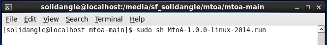
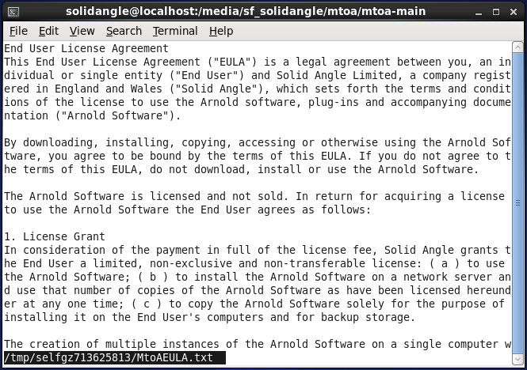
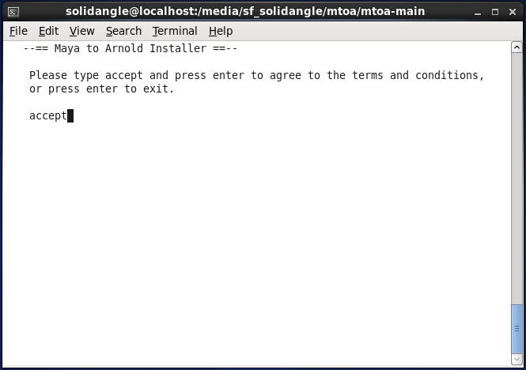
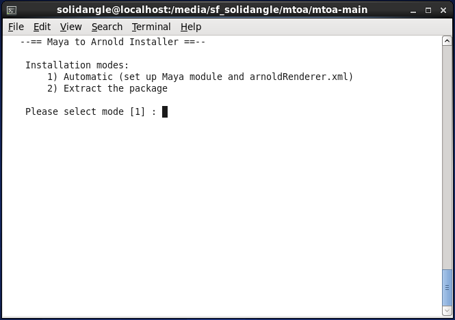
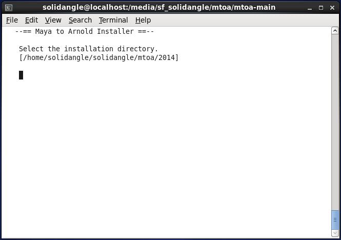
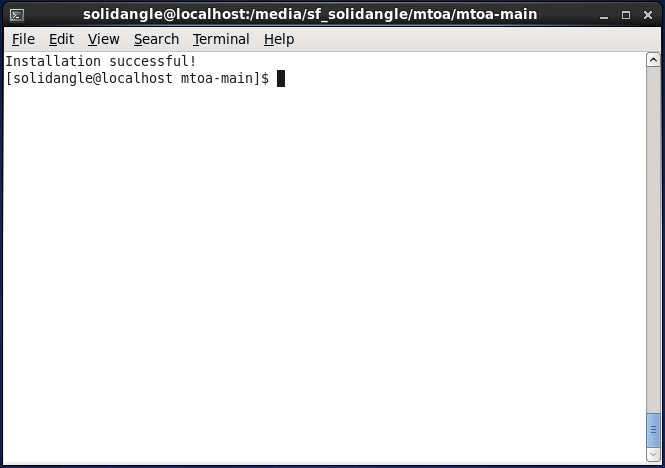
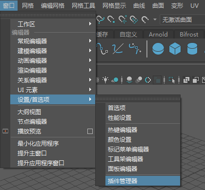

如果尚未安装，则需要下载 Arnold for Maya (MtoA)。下载完成后，请按照以下简单的步骤进行操作。
出于演示目的，本手册使用了 MtoA 1.0.0 和 Maya 2014，而您安装的版本的版本号和名称可能有所不同。需要在系统上安装 Python 2.6。
下载完 .run 文件后，打开终端。导航到保存下载文件的位置，然后使用“sudo sh”运行该文件（这是一个 Shell 脚本）。必须执行 sudo，因为该安装程序需要 root 权限来为 Maya 配置 MtoA。
sudo sh MtoA-1.0.0-linux-2014.run 
如果收到“用户不在 sudoers 文件中。将报告此事件”(User is not in the sudoers file. This incident will be reported)消息，您需要将用户添加到 sudoers 列表中。有关详细信息，请在 stack overflow 上查看此问题。
现在将为您提供一个安装向导。使用空格键可以进行滚动。然后，键入“accpet”并按 Enter 键，表示接受最终用户许可协议。


选择安装方法。本手册建议使用“自动”(Automatic)(1) 模式。“提取软件包”(Extract the package)(2) 模式将只提取软件包文件，这时用户需要自行配置模块（请参见“手动配置”部分）

现在，您需要选择安装目录；如果将安装目录留空，而直接按 Enter 键，Arnold 将安装至所示的默认目录。

现在，您应该看到一条消息，提示您 Arnold 已成功安装。

要在 Maya 中加载该插件，请转到“窗口”(Window)菜单，然后在“设置/首选项”(Settings/Preferences)下单击“插件管理器”(Plug-in Manager)。
并加载 mtoa.so

如果在安装程序中选择了“提取软件包”(Extract the package)选项，MtoA 模块将提取到指定路径。以下说明假定您在 Linux 上使用 Maya 2014，且此文件夹为：
/opt/solidangle/MtoA-0.24.0/2014
接下来，完成以下步骤：
MAYA_MODULE_PATH 设置为指向 /opt/solidangle/MtoA-0.24.0/2014 文件夹（mtoa.mod 所在的文件夹）。MAYA_RENDER_DESC_PATH 设置为指向 / opt/solidangle/MtoA-0.24.0 /2014 文件夹（arnoldRenderer.xml 所在的文件夹）。MtoA 并没有自动卸载程序。但是，使用 Maya 2013 或更高版本时，您可以放心地移除 MtoA 安装文件夹。如果您使用的是 Maya 2012，则还需要编辑 maya.env 文件以移除对 MtoA 的引用。